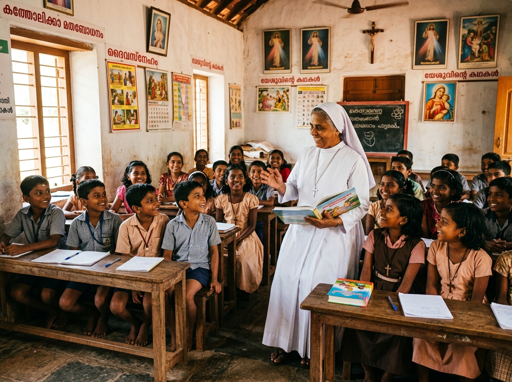

ST. THOMAS PARISH FELLOWSHIPS
Our Parish Community
Ministries & Pastoral Organizations
GROWING IN THE LORD
Strong Focus on Child Faith Formation
Under our Vicar's stewardship, our parish Sunday School remains the central pillar of parish growth. We train over 150 children in sacred scriptures, Malankara Church history, liturgical chants, and values of deep communal respect.
150+
Active Students
12
Dedicated Catechists
